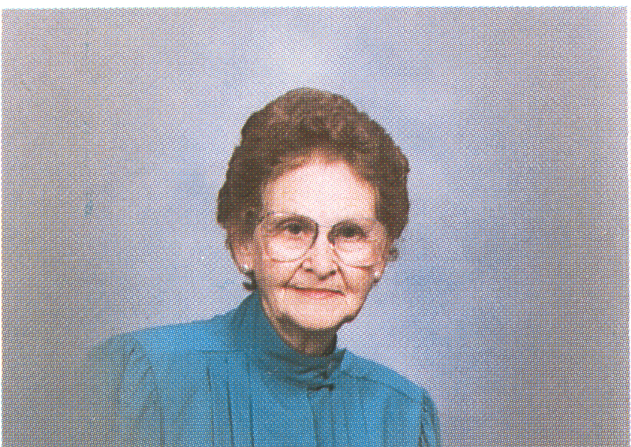

Dorothy M. Diekman
October 30, 1919 to January 13, 1992
Relationship to St. Andrew: Dorothy moved to West Lafayette in 1984 to be near her son and joined St. Andrew shortly after arriving.
Family: Dorothy had married Earl W. Diekman in 1941 and they made there home in Freelandville, IN. They had two sons, Mark A. and Daniel W. and three grandsons, Greg, Casey and Brian.
Recognitions: Dorothy had been a farm wife throughout her life. She had been active in her church, the schools and other community organizations at Freelandville. Since coming to West Lafayette she had volunteered at Home Hospital and Wabash Center. She was president of Wabash Gardens Condominium Association.
Memorials: Gifts were placed in the General Memorial Fund.